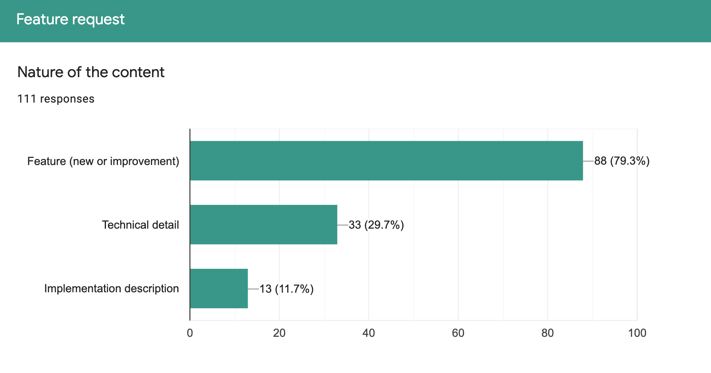

exploring product potential, users, and bottleneck
Personas Analysis
Role
Initial
Name
Description
UserStory
teachers
G
Gina
primary school teacher
#4
Giovanna
coding teacher
#8 #9
Giorgia
high school teacher
#6
students
M
Michela
8 yo - learning from home
#1
Marc
13 yo - doing a group homework
#2
Manon
18 yo - high school
#6
Martin
21 yo - university student of IOT
#3
Others
A
AGreenGames NGO
serious game company
#5
Agata
mum
#1
Antoine
teacher trainer
#4
Arianna
thymio trainer at schools or fairs
#7 #10 #12
Gina - primary school teacher:
She has little knowledge in computer science but is very excited on bringing the topic to her class, with which she's very bounded - She is accurate in activity preparation
Description - Primary school math teacher that wants to introduce computational thinking in a primary school class- she gets prepared for the lesson - she isn't scared by a long preparation of the activities.
Let's play together with Robots! Please, can you help me understand?
Needs - Accomplish curricula goals - making computational thinking accessible for primary school students - evaluating effectivity of her teaching. Making kids interact with the device without getting distracted from the interface
Challenges - Make her understand deeply what she is providing to her students such that she can give active guidance - once she gets instructed on the field, it is hard for her to get a refresher course
Opportunities - Offer her experience to the community to build the feeling that computer science/robotics can be taught easily in primary schools.
Giorgia - high school teacher:
She has deep knowledge in computer science
Description - She is an high school computer science teacher looking for means to propose complex exercises in an engaging way.
We need to address challenging problems to get prepared for the future - I want to excel in what I am doing
Needs - Align the activities she proposes with school curricula - collecting grades - sharing with colleagues (experiences, activities) - including impaired students
Challenges - Let off her past knowledge to stay intellectually fresh and updated
Opportunities - Maximise engagement and activity/experience sharing to foster more participation from colleagues and other teachers.
Giovanna - informal code teacher:
She has plenty of time for focusing on a single activity
Description - Coding teacher organising a diorama-like demonstration - she wants to go cross competencies - long preparation of the activity - many iterations - deep understanding of the tool she is using.
Please be creative with your robot - we don't want this to be boring!
Needs - Involving children with special needs - stability in the performance - replaceability of pieces - the demo can be stopped or restarted at any time by a single command
Challenges - Orchestrating different individuals to contribute to the overall idea of the expected result
Opportunities - Maximise team building activities to increase empathy and improve relationships..
Manon - 18yo:
high in the learning curve - curiosity - able to manage her impulses under pressure
Description - Manon is 18 attending an high school computer science lesson - she has to learn computational thinking concepts - she attends coding lesson in group while she exercises alone at home.
I'm wondering how this can be applied in the real world - if I find this interesting enough, it could become my university studies
Needs - Exercise at home to fix concepts learned in class
Challenges - showing her real life applications
Opportunities - learning about something else using the robots as attention seekers.
Marc - 13yo:
He is in the middle of the learning curve of computer science basic topics
Description - Marc is a middle school boy working in a group for the first time - he sometimes heard about hardware components and coding - he has the basic ideas on coding needs - he has access to a computer of which he has a password and is progressively becoming his experiment playground.
I would like to do amazing things with this robot - I feel I can do unusual things but I don't really know how
Needs - Improving his competences in coding - understanding more deeply the vertical technology stack (HW - FW - code - interface) - completing the homeworks - learning how to split and join back group work - feeling supported from the group -
learning about communication - learning about cooperation
Challenges - individual learning process while working in a team
Opportunities - Improving soft skills.
Martin - 23 yo:
Learning non-robotics elements while using the Thymio as a medium
Description - Martin is attending an IOT University lesson in the communication software - He is proficient in coding skills and has wide computer science concepts.
When I grow up I would like to become a Computer Scientist
Needs - In depth learning, smart object networking
Challenges - Avoiding the language syntax or the robot to be an obstacle to his learning focus
Opportunities - Making him doing little effort while coding - getting him excited of the State of the Art.
Michela - 8 yo:
at the very beginning of her learning curve - Enthusiasm and excitement on interacting semi-autonomously with a device
Description - 8 years old - she knows how to plug a cable, how to interact with a device - she can use an iPad autonomously for watching youtube and playing games - sometimes she uses the home computer for doing little activities online, but supervised by an adult - she knows how to open a browser, how the mouse works.
I want the robot to move! At home is not like school, I want to play
Needs - Being guided in her first steps - having her medium obstacles removed (communication - interaction) for facing ASAP the “hello word”: abstraction - narrativization - instructionability
Feeling that she is playing more than making homework
Challenges - canalysing her enthusiasm of I'll touch everything to make the robot doing something meaningful instead of just moving
Opportunities - Making her understanding more than just coding as architectural layering of devices.
A GreenGames NGO:
Teaching computer science or robotics is not the goal
Description - Organisation that exploits gamification for promoting social themes to people of any age.
People must understand that without cooperation the world is gonna collapse. Let's prepare them for the future
Needs - Fast set up of the demonstration (fairs setup) - activity that has low learning curve and high impact - economically cheap solutions for few days of usage - massive deployment to interested stakeholders
Challenges - making the robot the medium of the activity and not the goal itself
Opportunities - Make the company promote the Thymio robot during their demonstrations.
Agata - at home mum:
she needs guidance in activity preparation and system setup - she has little autonomy in didactics and in computer science
Description - She is the mum of an 8 years old girl - she uses to check her daughter's homework matching expected results - she has zero knowledge on robotic hardware or firmware.
I want Michela having fun while learning and improving a very important skill that would impact her future career - is Michela learning coding?
Needs - Being guided into providing engaging activities - easy setup - maximise the return of her investment
Challenges - Checking the correctness of her daughter solution - setting up the environment
Opportunities - Making also Agata learn something new while helping her daughter.
Antoine - teacher trainer:
Deep know - how on didactics - good understanding of computer science
Description - Certified trainer for professors - organises meetings with teachers either in person or remotely for training.
Coding is easier than what you think
Needs - Understanding how effective his training are - follow up the teacher she trained - making teachers understand the didactic value of the tool
Challenges - Overcoming the age-gender gap to being introduced into technology for old style teachers
Opportunities - Collecting feedback on the user needs (teachers, kids) for improving the product.
Arianna - Thymio trainer:
She has little time to setup and train - Deep know-how on the tool suite
Description - She is a researcher in social pedagogy that loves to use new technologies - she wants to create educational content that supports the acquisition of soft skills in children, such as collective decision-making.
Hey Kids! Let's put the robot down for one moment and think about what we want to achieve!
Needs - Setting up a demonstration quickly and without effort - having fast access to several devices without spending too much money
Challenges - Setting up a demonstration quickly and without effort - having fast access to several devices without spending too much money
Opportunities - Opening-up new market .
Users Needs Analysis
view the static versionview the interactive version
Initial Scenarios
During the first phase o collective 16 Thymio users provided 48 scenarios
Scenario Analysis

Show all Tags details Hide all Tags details
High Compatibility
Flexibility of tools: compatibility with different programming languages (i.e., Python), as well as with different simulated or real robots. Integration with ROS. OO programming
Abstraction skills
Make students think about their code BEFORE coding. Use the Thymio load program interface as a tool to help students cultivate abstraction.
Smart Applications
Enable dealing with AI, Image Processing challenges and expanding applications (e.g. domotics) or implementation of more high-level and complex algorithms.
Advanced usage
Thymio used to teach the basics of robotics in high schools or universities, or for robotics research
Curriculum compliance
Provide activities compliant with the official school curricula. Covering the full age spectrum (mapping activities - curriculum).
Built-in tutorials
Didactic resources directly integrated in the working environment for a rapid consultation. A big database of resources for teachers, seen as a list of cross-curricular resources, a way to promote better understanding and to facilitate the integration of Thymio into their curriculum.
Educational Community
Community for teachers with tools for creating and sharing educational contents.
Training environment & e-learning
Training environment for teachers with examples to test and get ideas from. Pedagocial information about the addressed skills and competences for each of the activities. Provide a structured learning experience for students by means of proposed activities (in a software suite or in the cloud).
Reusable resources
High level abstraction: opportunity to create libraries of pre-built behaviours for re-use purposes. Databases with ready-made programs/components. Cloud Applications to be able to have library of programs and test routines.
Group Work
Team work made easy through collaborative activities and challenges using Thymio (e.g., final-year project with multiple robots)
Soft Skills
Learning to collaborate by letting Thymio robots communicate with each other. Co-operation, communication and collaboration can be powerful means to extend the possibilities of pedagogical activities with Thymio.
Community creation and challenges
Creating tournament to showcase Thymios projects and promote more events (e.g., R2T2), challenges and tournaments to be compliant with the educational methodology based on projects. Have a European club for exchange of good practices among teachers and remote challenges/International competitions for students.
Remote Access
Physical/simulated robots accessible via the internet.
Distance learning & Virtual classroom
Use the Thymio for distance learning and in virtual classroom. Homeworking remote access of a robot (students accessing the robot at the teacher's home or school).
Simulation
To support remote activities, the simulator is an essential tool.
Easy program load
Simple ways of loading pre-programmed behaviours to the robot.
Program Thymio by inserting a SD CARD (physical reprogramming). Thymio reads barcodes enabling specific programs.
Software installation process
Support for simple installation procedure.
Multirobot deploy
Support to deploy programs simultaneously on more than one robot.
Modular platform
Provide a flexible, rich, modular platform with wide sensing/acting abilities. Think to the Thymio not just as a robot, but rather as a remotely controllable object with two motors and several sensors/actuators.
IR Communication among robots
Local communication fits well with the autonomy concept of the robots, where one talks and others listen. Enable teaching different aspects of communication, synchronization and transfer of information, also enabling interesting challenges related to protocols (acknowledgement of receipt).
Communication with beacons or other types of educational robots
Enabling communication with other devices improves Thymio usability (beacons for self-localisation, other robots for more complex educational scenario).
Learning Networking
Enable learning concepts of networking by means of WiFi communication among robots, as well as communication with other devices through some interface module.
Physical substitutes
Paper accessories to help understanding (physical substitute of the robot) and be eco-friendly. To overpass physical absence, a physical substitute (e.g.,Polystyrene/Paper Model of Thymio) can help to become familiar with.
Rental Services
Rental services might improve diffusion of Thymio. It could encourage schools to rent large numbers of robots and support more interesting educational scenarios (e.g., challenges, collaborative games and activities)
Open Architecture
Open architecture allowing anyone to plus his own tools
Data privacy
Be champion in data privacy
Storytelling
Storytelling where Thymio play roles by providing an easy way to record sounds.
Complex Commands
Better sound support for giving complex commands to the robot based on sound.
Tool to promote inclusion
Letting the Thymio being a tool to promote inclusion by providing tools for create educational contents following the standard inclusion criteria (e.g., integration with C.A.A. Sw).
User Stories
#1: The Special Birthday Present
Agata is a technology-enthusiast mother who learned about the Thymio on Facebook. She decides to buy a robot for the birthday of her 8yo daughter, Michela. Agata wants Michela to learn about programming and robotics while having fun!
The Thymio comes in a box with a set of activities and challenges, each activity is well described and can be solved with different languages: VPL3, Scratch or Python. Each activity has a QR-code linking to the cloud, from where the Thymio experience starts.
Agata switches on the Thymio and connects the Thymio to the computer (cable/dongle…). She opens the webpage linked to the chosen activity, the Thymio is recognised, and Agata can now click on the link to open the programming environment that she prefers. She choses VPL3 and Michela can now start programming!
Michela can save and restart the activity/challenge any time. When she's happy with the result, she check her solution on the cloud: she submits her program, which is compared with the official solution(s)—later displayed to Michela for her to learn about other ways of obtaining the same behaviour.
Michela's solution is also compared with the ones of other users, and evaluated for performance and cleanliness. A hall of fame is generated and updated whit all new challenges that are solved.
#2: A groupwork for a group of robots
We are student group of 3 and have to make a collective task with 3 Thymio that have to communicate together. In first time we have to split the work and decide how is responsible of each part and agree on witch channel, type of message allow to make the task. We have all a computer and can use the language of programming between VPL or Aseba to communicate.
We can use both communication mechanism of Thymio as local IR or trough wireless (Wifi). First we make our programming in our part and testing the basic behavior of each robot. Then we combine our work creating a group of robot using the interface so that we are sure message are switch to all the robot. Local IR protocol is easy to set up and robots exchange data in a simple mode using color in VPL, that are easy to get from the scripting aseba mode .
We can follow from our computers all steps of the task and monitoring what is happening.
Finally we can show our solution comparing with other team in a small competition.
#3: Thymio brings me a coffee
I am student in a communication software lecture. We have to learn smart object networking. We have for that different kind of Thymio that are connect through wifi. We see all robots inside the network as well we have access trough specif IP to smart sensors. We can easily filter the robot by name or number so that we found our robots and can make a sub network that are not interfering the other robot from other student. One time my network is set up I can program my robots using python or aseba in studio. I can see easily all variable inside robots and plot graph or set up a monitor panel that show me the status (like sysquake).
So I make my smart scenario where when I come back home, the camera robot is recognising me and ask me if it is not to cold outside (it knows trough a smart temperature sensors). I respond that I am cold and need a coffee. Some action are generated on different module that easing me the life like opening doors or switching on lamps. A mobile Thymio 3 robot brings me a coffee.
#4: Training the Teachers
This user story is about a primary school teacher who should introduce computer science or artificial intelligence or computstional thinking in her class based on the goals defined in the curriculum. This story could be also the story of a teacher who would like to use educational robotics in his teaching. The first thing the teacher will looking at is training. Of course she would prefer a standard training by human trainers but any hybrid solution could also help. As this is a path supported by local universities and government, she goes on the thymio community platform looking for a course in her region. She finds hybrid courses where a human trainer helps her remotely. This help includes debug, clarification of the students' progress, analisis of the activities of the class, and thus remedy the difficulties encountered. For this the trainer has access to analytics of the class activity. The teacher follows the training by making activities together with other 2-3 teachers, meeting them outside school hours. To run this she gets the full equipment at home and she can interact remotely with a set up located at the trainer's place. The training is strongly centerd on the activities done by the kids that the teacher can experiment to understand the full concept. The activities combine unplugged activities and activities using pc or tablet, transversal (soft) skills and disciplinary ones. A library of activities is available and can be easily explored (videos show how this look like) and tested. The activities are relevant with the curriculum, radiate in the interdisciplinary fields calling for the creativity (and critical spirit) of students, to guide them in their daily actions with the machines that surround them. Every activity is explicitly connected to some concepts of the curriculum. The teacher is then invited to experiment the activities in her class, using the same environment used in her training and borrowing the thymio for the class from a local (or school based) educational center. The Thymio environment allows to manage the class, organise sequences of activities, modify the exercises, collect and format evaluations, keep logs pf activities and grades. It can be combined with other well-known environments such as graasp. When in the class, the children can also exchange with other classes and have common activities remotely, accessing a common infrastructure. The teacher can continuously exchange with colleagues about the experience, get and give suggestions. Results can be formatted to be sent online to the parents. If the teacher create new activities she can easily share them with colleagues.
In case of COVID situations, the teacher can access remotely to the environment of the children and interact with them using a video conferencing tool embedded in the system. She can also exploit shared Thymio infrastructures (distant places with Thymio robots accessible for class activities).
#5: Groupwork
GreenGames is an NGO that uses new technologies, including robots, to deliver serious games to promote sustainability and environmentally respectful lifestyles. The education department wants to setup a new interactive serious game to be delivered at fairs and science festivals, targeting children from 6 to 12 years old. They learned about Thymio and want to setup a game with a dozen robots working in parallel. They first experience with the simulator, and then decide to rent or buy the robots.
The main aspects of the demo are the interaction among robots through local communication, and the possibility of users to define the robot behaviour on the fly.
A child stepping by at the GreenGame stand should use a tablet to interact with one or more robots at the same time, and observe the effects of his interaction on the behaviour of the robots. Everything is designed to bring forth an educational message that is embodied by the robots' behaviour.
Given the availability of a flexible API, GreenGames decides to develop a custom web frontend. The robots are provided with a set of basic behaviours, which are programmed using Python or VPL3, first with simulations (for evaluation purposes) and then with real robots. These behaviours represent the building blocks of the interactive game.
The custom frontend allows to define a high-level behaviour by dragging and dropping blocks to be executed concurrently, and allows to set some parameter for the building blocks. Once a user is satisfied with the solution, it can assign it to one or more robots available in the interactive game with just few clicks. The frontend enables multiple kids to work in parallel on different tablets, and the kids need to cooperate for the global mission to be accomplished. Only when all kids adhere to a “sustainable” solution, the robots will be capable of solving the challenge. In this way, by engaging with the robots and with each other, the children learn about sustainability and the need to collaborate.
The demonstration is made available online to other associations willing to deliver it in as many venues as possible. The Thymio rental service supports deployments even for single events..
#6: Just a Normal day at HighSchool
This user story is about a high-school computer science teacher who would like to use Thymio in her computer science courses to introduce artificial intelligence or computational thinking , of course aligned with the goals defined in the curriculum. This person has a master in computer science and does not need any training in this field, but needs good documentation and well-prepared activities. Therefore she looks on internet and find the Thymio repository and teacher community. She finds activities that are well aligned with the curriculum, and using the same language she is using (phython). She can modify the activities to match specific needs of the class (inclusion). The programming environment she can access allows simulation, use of a real robot, debug, remote access and is easy to install on the very different computers of the students (BYOD). To test she can get the full equipment at home and she can interact remotely with a set up located in a central place. The activities combine unplugged activities and activities using pc or tablet, CS core concepts and sociological aspects related to digital transformation. The teacher is then testing the activities in her class, getting thymio from central borrowing centers. The Thymio environment allows to manage the class, organise sequences of activities, modify the exercises, collect and format evaluations, keep logs of activities, do analytics on these logs and and manage grades. It can be combined with other well-known environments such as graasp. When in the class, the children can also exchange with other classes and have common activities remotely, accessing a common infrastructure. The teacher can continuously exchange with colleagues about the experience, get and give suggestions. Results can be formatted and published online. If the teacher create new activities she can easily share them with colleagues.
In case of COVID situations, the teacher can access remotely to the environment of the students and interact with them using a video conferencing tool embedded in the system. She can also exploit shared Thymio infrastructures (distant places with Thymio robots accessible for class activities).
.
#7: Arianna in class
"Arianna is a researcher in social pedagogy that loves to use new technologies, especially robots, to create educational content that develops soft skills in children.
Starting from this purpose and exploiting a design pattern for collective decision-making in decentralized systems based on the honeybees behaviour, she would like to implement a demonstration for the Thymio robots, which also includes an interactive part for educational purposes. The case study focuses on a value-sensitive collective decision problem, whereby a group of Thymio robots need to choose the highest value option among a set of available alternatives.
In her implementation, a group of 𝑁 = 8 house-hunting Thymios (dressed as bees, and called Thymio–Bees) are engaged in a collective decision among 𝑀 = 4 available options, that are embodied by an immobile Thymio–Nest, which is characterized by a quality value.
The Thymio–Nests are positioned at the corner of a square arena, that is, otherwise free for the Thymio–Bees to move and explore.
A remote controller or a mobile APP are used to interact with the DEMO: turn on/off the run, set the Thymio–Bees attitude (collaborative vs. stubborn) and the quality of the Thymio-Nests.
Arianna wrote her code using Aseba language and save the bytecode on a sd card to be ready to set-up the demonstration everywhere and in a quick way. She goes to show her activities on several schools, educational events and exhibitions and she usually is likely to use the rental service, when needed. The demonstration is made available online to other educators and schools to replicate it as many times as possible.
".
#8: The end of the year Diorama
"A coding teacher would like to organise the annual year-end demonstration with her students. She selected the Thymio robots as robotic platform to implement an animated diorama. Students work in groups of 2 or 3 with one robot per group to prepare their part. The robots are used to animate the different characters or elements of the set. Moreover, some robots will be ""animated"" by children with special needs thanks to the integration with C.A.A. Sw. to guarantee inclusion.
The robots are synchronised with each other to perform a storytelling, using direct/local communication or through a central computer.
Thymio play different roles and to increase the audience engagement, some robots can interact by providing an easy way to record sounds and react to simple ""vocal commands"".
The diorama have to remain in position and running for several days, so the robots need to be easily replaced to recharge the batteries. The Demo can be stopped or re-started at any time by a single command (avoiding to switch the robots off one by one). Sd-cards are used to save pre-defined roles and to replace on the fly discharged or malfunctioning robots with other ones.
And afterwards, the teacher will create and share libraries of the behaviours as reausable resources to help grow the Community Databases with ready-made programs/components. ".
#9: Fantasy Story
"
A teacher at secondary level 1 decides to start a class project where he tries to integrate as many teaching subjects as possible, e.g. languages, mathematics, natural science, manual tasks, music etc. to foster creativity and collaboration in his class. His goal is to involve all his pupils according to their talents. Therefore, he starts a special theatre project where his class must create and perform its own fantasy story. He animates the class to think about characters that could occur in this fantasy story. As a source he suggests historic characters (related to history lessons) or characters from exotic places (related to geography lessons) or fantasy creatures based and exotic animals or plants (related to biology lessons). The teacher's idea is to have a few human actors on stage as well as some artificial creatures made from cardboard, coloured paper and wood. The artificial creatures should be colourful light-weight objects that are controlled by Thymio3 Robots. The robots should use their wheels to make the objects move or use their LEDs to create colourful light effects. The loudspeakers could generate the necessary sound effects.
The plan of the project is that the class first works out the different characters of the play, the human characters as well as the artificial fantasy creatures. For each of these different kinds of actors the teacher wants to have a short description and if possible, also a rough sketch. He lets his pupils work in small groups to create a set of characters. At this stage there is no special focus on the stories content. The class finally decides which of the characters they want to use to create their play.
During the next stage the teacher splits the class in different teams. He needs writers, actors, designer for the stage and designers for the fantasy creatures as well as programmers that can integrate the robots that perform all the movement, sound and light effects. For one fantasy creatures it may be necessary to use more than one Robot. Pupils can use special wheels to wind up strings that are fixed to movable parts or they can fix lightweight objects directly to the wheels. In case they need to execute precise and reproduceable movements, the robot is equipped with a position feedback for each wheel. If several robots work in collaboration, they can be linked with an optical link in order to send trigger signals from one robot to another. The programming tool makes it convenient to deploy different programs to a set of robots. It's also important to think about how to activate the fantasy creatures' behaviours by means of the available sensors during the performance. The idea is that the fantasy creatures react as autonomous objects that can activated during the performance by the actors or by an assistant. It's helpful that the robots have proper fixation points that can be used to fix them tightly on a base construction made of wooden slats. While some of the pupils are working on a story around the defined human and nonhuman characters, others are constructing colourful objects with wings and arms and many other movable parts like big illuminated eyes with eyelids that can move up and down. There are even some small creatures that move like ducklings over the stage by following a predefined path marked with a black line and they coordinate their behaviour by IR communication.
During the public performance where parents and relatives are present all pupils are involved either as actors or they are responsible for the proper operation of any of the fantasy creatures.
After the performance there is a backstage presentation where the audience can have a closer look at all the fantasy creatures and their creators are there to explain how they were built and how they operate.
The teacher is satisfied about his project as he realises that even pupils that were not prepared to perform on stage were enthusiastic to explain their work to the audience during the backstage presentation. What makes him specially happy is the fact that his pupils had to use so many different skills during the preparation: They had to find sources of inspiration, they had to weigh up different ways of constructions for their objects, they had to measure ,to estimate and to calculate, to describe behaviours, to coordinate speed and sequences of different movements and to express different behaviours in programs. They had to write a story, to draw, to speak in public and take over responsibilities for material and functions. His pupils also learnt how to work in a team and how inspiring it is to combine different ideas and skills to something that is bigger than one single idea or skill.
".
#10: The day is very special: Thymio is in class!
"Curiosity is palpable in the air: today we will finally work with a robot! I am sitting at my desk, in the front row. Usually the front row is not coveted, but today I'm glad to be so far ahead, I will be able to see the robots better! The bell rings and, finally, two boys enter the class with a steel-colored briefcase and bags containing computers. We are all sitting in place, eagerly waiting to begin. The boys introduce themselves, they say they are educators specialized in robotics: today they will give a lesson on cyberbullying! They open the steel case, and, inside, there are several white robots, with two black wheels. The boys present the robot: it's called Thymio, it's a small white robot, with two wheels and different sensors, which allow it to find obstacles and move around the room alone. Thymio has LEDs that change color; each color corresponds to a different behavior! I can't wait to try! The two educators make us divide into groups: luckily I'm with my best friend! Each group has a robot and a computer: they initially make us try the behaviors already present in Thymio, corresponding to the various colors. Then they make us turn on the computer and explain Thymio VPL, the program to program the robot! It is very simple and colorful! Our group has to program the bully. It is difficult for everyone to agree, but in the end we manage to write a beautiful program! The educators complimented us!
Here's how one of the children in the classes we work in would describe a discovery laboratory with Thymio. We never use a robot for every child, but we prefer shared use (at least one robot for every three children), we believe it is essential for collaborative learning and for going to work on relational skills. This allows us to work also on the inclusion of the most fragile children who receive support directly from their group mates in case of need, but who at the same time manage to put their particular skills into play at the service of the group and to achieve a common goal.
When we organize classroom workshops, teachers often ask us to characterize them according to the topic / subject that is being addressed at that particular time with the children. In some cases, this involves an initial planning done in collaboration with the teachers themselves, who thus feel more involved and responsible for the workshop they will participate in.".
#11: Thymio for Inclusion - CAA
"
The idea is that a Teacher who supports a student with difficulties to learn (foreigner without a common language with the teacher or with Autism, Asperger, Down syndrom, or other problems where CAA could help) is helped by a teacher to use a robot like Thymio to learn. The techer writes the PECS withS SIMCAA. In SIMCAA there are the icons for Thymio and common words (I am working on that) and the VPL icons. Then there should be a sort of integration of shared instructions between Thymio programming IDE and SIMCAA to make life easy for the teachers and a smooth UX.
".
#12: Stripes Digitus Lab
"
""We are finally at the Expo! It's been a long time since I came here, it's really changed a lot! Today I will have a laboratory with a small robot, with a somewhat strange name: Thymio. I am really curious! With me is my little sister; she's small, but she's eager to try the lab too! We enter Cascina Triulza and go up the stairs: we are welcomed by nice guys, all dressed in a black T-shirt. They make us sit in a circle, my little sister next to me. They give each of us a Thymio and leave us a few minutes to discover the robot: in his hand it is very nice; looks like a little monster with many eyes! If you press the upper keys it turns on! If I press the triangular arrows it changes color, while if I press the central circle it moves! The guys with the black T-shirt, at one point, explain to us how the robot works. They say he is able to feel emotions! I look at them amazed: they make us wear the robot with the red color; they tell us to observe it carefully. Anger immediately comes to mind; however, observing him carefully, I see that if I approach him with my hand he runs away, as if he were frightened! Then I raise my hand and say ""Thymio is afraid!"". It was correct! After the red color, they also make us try all the other behaviors! It was a great workshop!""
The exploratory laboratory is the basis of all our events at the Stripes Digitus Lab as they help us understand the basic level at which children start and give them initial training in the use of a tool they have most likely never seen before. The basic behaviors are very useful for making educational workshops that have emotions as their main theme, children can easily project their emotions onto a tool other than them and thus be able to better process the most unpleasant emotions such as anger and fear.".
Background infos
Who is the main user?12 responses
Children
2
Teachers
4
Parents
0
School class
3
Students
2
Educator
1
3 (25%)
No responses yet for this question.
Who are the other main characters involved?12 responses